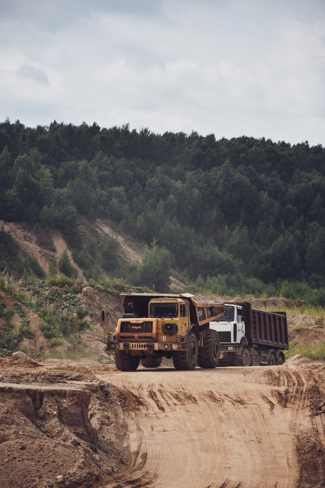

Reliability
Clear commitments and dependable delivery, from start to finish.
Grounded in execution. Guided by purpose.
JP Infra Projects is focused on infrastructure, construction and development. We believe strong projects are built through practical thinking, engineering discipline, responsible execution and a commitment to the people and places they serve.
We bring a hands-on mindset to every stage of work—understanding the brief, planning with care, coordinating on site and delivering with quality.
Our values are reflected in how we plan, collaborate, solve problems and deliver.
Clear commitments and dependable delivery, from start to finish.
Careful execution, attention to detail and work built to last.
Respect for people, site conditions and responsible work practices.
Forward thinking and practical solutions that move projects ahead.

We value clarity, collaboration and responsiveness. We adapt to site realities while keeping the project’s objectives, quality and safety in focus.